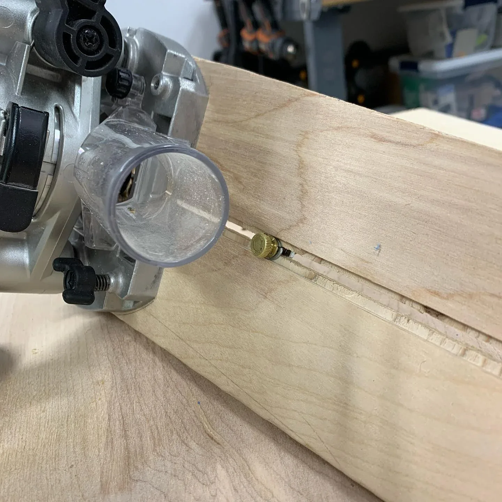
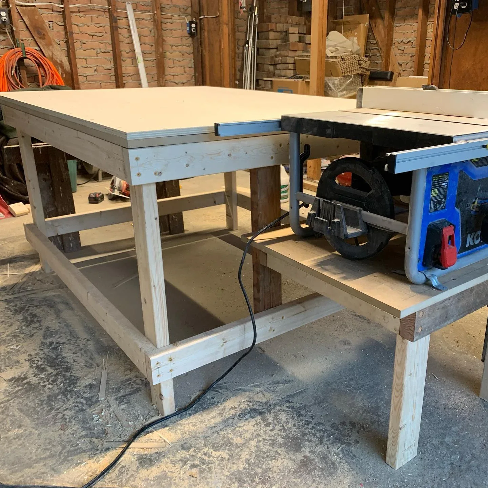

Piece / projectA circle jig for the router
A shop-made adjustable jig, followed by a practical kitchen fix that put it straight to work.
Shop & tools • Shop-made jig
A shop-made circle-cutting jig, built during a rainy day in the workshop.
I used a rainy day to make a new jig for cutting circles. The project was as much about working through the setup as making the finished blank.
The photo shows the jig on the table saw with one of the circular pieces it cut. I made it as a working shop tool for later projects.
I built this table-saw jig during a rainy day in the shop because I wanted a repeatable way to cut circles. The project involved the sheet material, the workholding, and the setup around the saw. A jig is only useful if the part stays controlled and the operation can be repeated. I photographed it with one of the circular blanks it cut, which shows that the setup made it through an actual trial.
Design and making: Michael Pytlowany.
Historical project photograph only, not a recommended setup or operating guide. It does not establish safe use, comparative accuracy, or suitability for another saw.
Mike's Functional Artistry project archive
19 July 2020
KEEP EXPLORING

Piece / projectA shop-made adjustable jig, followed by a practical kitchen fix that put it straight to work.
 Piece / project
Piece / projectCNC-cut panels became a tool for the woodshop. Sometimes making things starts with making the tool.

Piece / projectA shop-built workbench brings the table saw, laminated top, and woodworking vise into one working area.